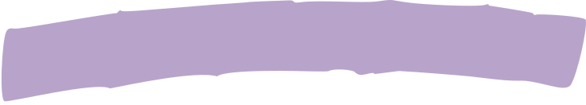
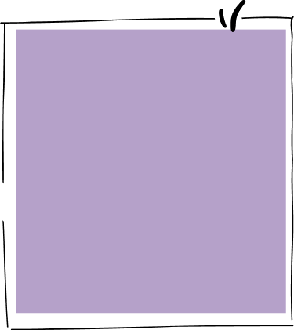
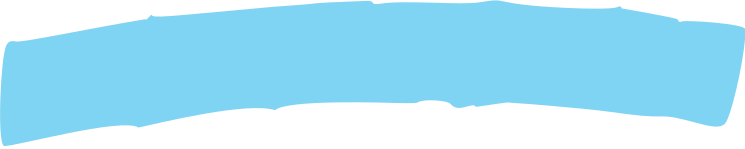
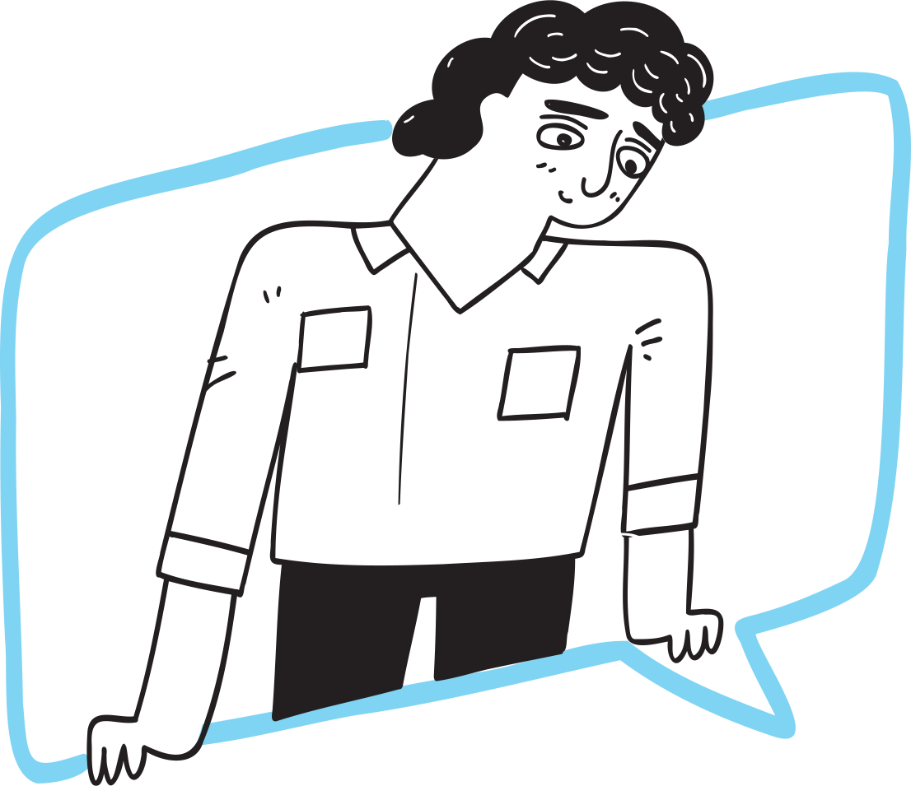
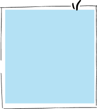

Periles de Semilleros
+200
integrantes hacen parte
de nuestros semileros
de nuestros semileros


ÚneTE a investigar
Únete a nuestro equipo de investigadores en innovaTE y colabora en la vanguardia de la ciencia y el
emprendimiento. Contribuye con tu conocimiento y energía en proyectos que están definiendo el
futuro de la innovación.


Carlos Gómez
Estudiante de Ingeniería de Sistemas
Ser parte del grupo de investigación me ha permitido explorar la intersección de la tecnología y el emprendimiento, ampliando mi visión del impacto social de la ingeniería.
Sofía Martínez
Estudiante de Ingeniería Electrónica
Trabajar en innovaTE me ha dado la oportunidad de aplicar mis conocimientos técnicos en situaciones del mundo real, impulsando mi carrera hacia la investigación aplicada.
Luisa Fernández
Estudiante de Ingeniería Industrial
Colaborar en proyectos de investigación ha enriquecido mi experiencia educativa, dándome una perspectiva práctica de los desafíos en la industria.
Diego Ramírez
Estudiante de Ingeniería Ambiental
Participar en el grupo de investigación ha sido clave para entender cómo la ingeniería puede contribuir a soluciones sostenibles y ecológicas.
Investigadores